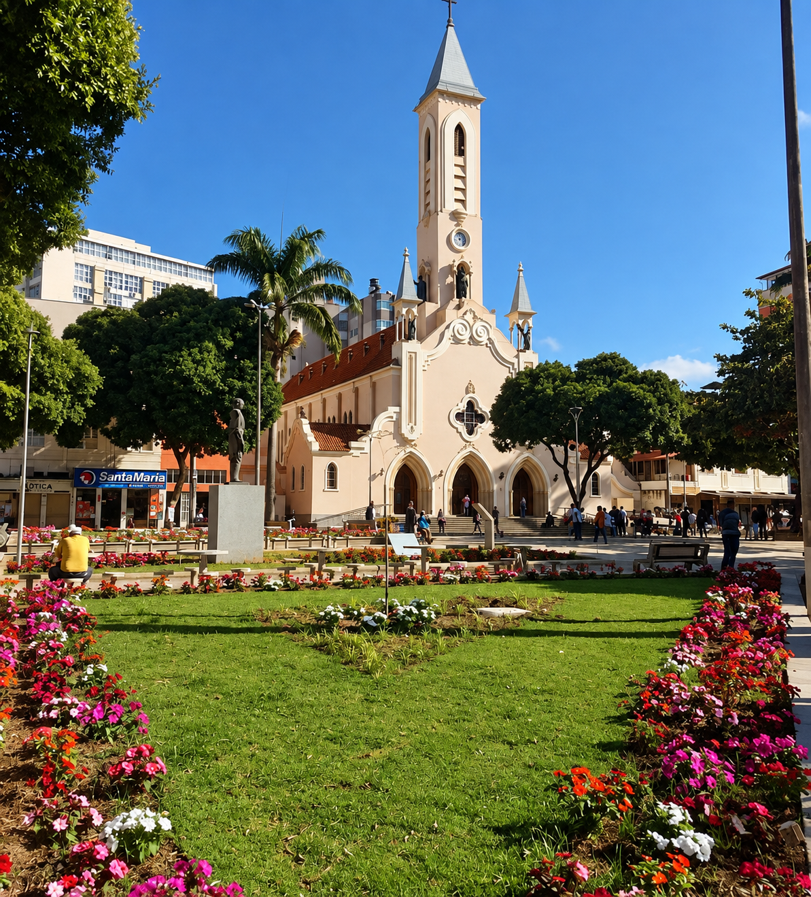

Promover a acessibilidade
Incentivar espaços públicos que possam ser utilizados por pessoas com diferentes necessidades.
O Praça para Todos é um projeto de extensão da Univiçosa dedicado à acessibilidade e à inclusão nas praças de Viçosa, Minas Gerais.
Os espaços públicos desempenham um papel importante na convivência, no lazer e na participação da comunidade. Por isso, é fundamental que sejam planejados para atender às diferentes necessidades das pessoas.
Por meio da integração entre conhecimento acadêmico e comunidade, o projeto busca contribuir para a discussão e a divulgação de soluções que tornem as praças mais acessíveis, seguras e acolhedoras.
Conheça os principais propósitos do Praça para Todos e como o projeto busca contribuir para espaços públicos mais inclusivos.
Incentivar espaços públicos que possam ser utilizados por pessoas com diferentes necessidades.
Observar dificuldades de circulação, orientação e utilização das praças.
Divulgar informações e diretrizes sobre acessibilidade e inclusão.
Estimular a participação e a convivência nos espaços públicos.

As praças são espaços de encontro, lazer e convivência. Para que todas as pessoas possam aproveitá-las, é importante eliminar barreiras que dificultam a circulação, a orientação e a utilização desses ambientes.
Uma praça acessível beneficia toda a comunidade, incluindo pessoas com deficiência, idosos, crianças e pessoas com mobilidade reduzida.
Mais independência para utilizar os espaços públicos.
Ambientes que reduzem obstáculos e riscos durante a circulação.
Oportunidades de convivência e participação para todos.
O Praça para Todos é uma iniciativa de extensão universitária vinculada à UniViçosa, que aproxima o conhecimento acadêmico das necessidades da comunidade.
A proposta reúne estudos, discussões e soluções voltadas à acessibilidade dos espaços públicos, contribuindo para a construção de ambientes mais inclusivos.
Projeto de extensão universitária
Viçosa • Minas Gerais